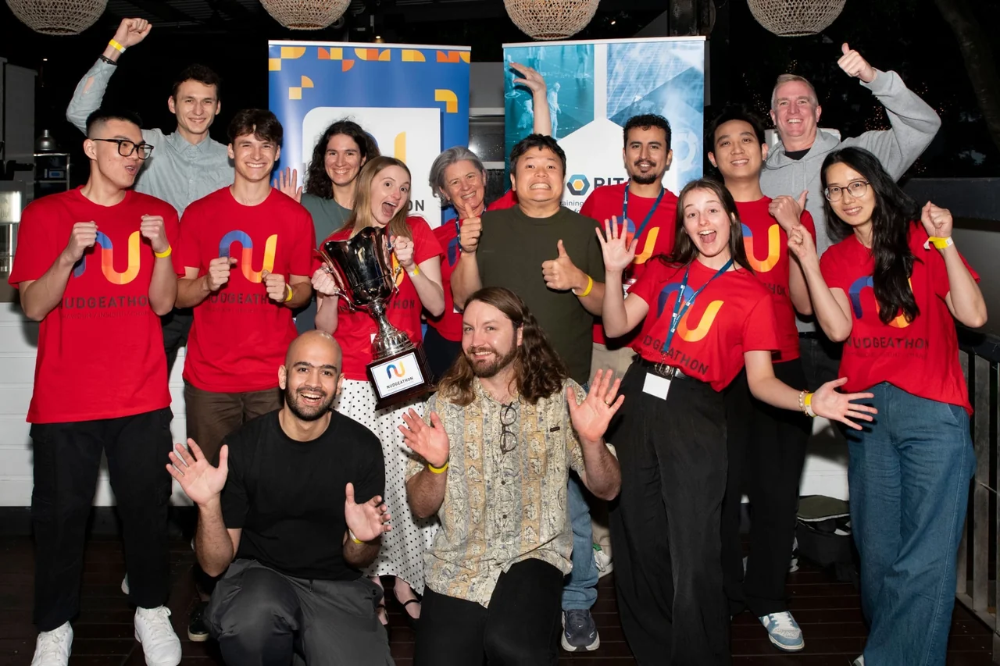
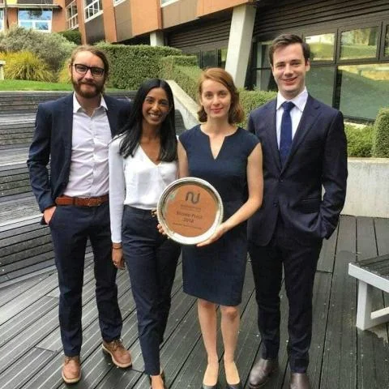

Teaching, supervision & sharing
Teaching and supervision
I teach economics and research methods. In class, I use worked examples and demonstrations to connect a method’s assumptions with the questions it can help answer.
Queensland University of Technology
University teaching
EFB350 · Data Capture and Research Design
Co-Developer, Co-Coordinator & Lecturer · Undergraduate · 2024–2025
I helped develop and deliver a 13-week interdisciplinary unit informed by the methods framework from my doctoral research. Students explored experimental and survey design, narrative and content analysis, networks, agent-based modelling, biosensors, remote sensing, online data collection and generative AI.
Practical activities connected research principles with R, Qualtrics/SMARTRIQs, LIWC-22, Gephi, NetLogo, Python and AI APIs. I contributed to curriculum, learning outcomes, assessment, teaching coordination and formal peer review of the learning environment.
EFN405 · Applied Economics
Tutor & Canvas Coordinator · Postgraduate · 2023–2024
Postgraduate tutorials, online learning materials, assessment, marking and feedback, with an emphasis on applying economic reasoning to practical problems.
BSB113 · Economics
Tutor · Undergraduate · 2022
Introductory economics tutorials helping students connect foundational principles with real-world examples and build analytical confidence.
Engineering academic support
Sessional Academic Success Program · 2018
Targeted individual and small-group support in advanced engineering mathematics, electronic design, and electromagnetics and machines.
Workshops and open resources
Sharing research tools
ARC BITA Geek Seminar Series
I co-founded and coordinate this practical seminar series on empirical methods and technologies for behavioural insights and technology adoption. I developed and maintain its public GitHub knowledge hub, preserving slides, code demonstrations, recordings where available and further reading.
Browse the knowledge hubSynthetic data and silicon sampling
I designed and delivered a five-part ARC BITA research-skills workshop series in May–October 2024, covering synthetic respondents, language-model-based research, experimental design, evaluation and responsible use.
AI for academic research
My invited University of Western Australia lecture in April 2025, “How Can I Use AI to Help My Academic Research?”, brought together more than 120 participants in person and online.
Research development
Supervision and mentoring
My supervision spans applied AI, behavioural economics, computational methods, information systems and technology adoption. Depending on the project, I help with study design and analysis, computational models or software, and preparing the work for publication.
As of October 2026, I have held eight Associate Supervisor appointments, including an MPhil candidate who completed in August 2026 and subsequently progressed to doctoral study.
I also mentor research assistants, software developers and student project teams, and contribute to Mansfield State High School’s Digital Solutions Mentorship Program. I welcome enquiries where research interests and institutional supervision arrangements align.
Behavioural science, together
The Nudgeathon community
Nudgeathons have been part of my journey from student competitor to mentor and coach. As a coach, I help teams work through the behavioural evidence and the practical limits of their proposals.




Domain expert, advisor & coach
Supported 12 teams from Australian universities and government departments across the QUT-hosted Nudgeathons, including the 2026 event in Brisbane.
Coaching QUT undergraduate teams
People’s Choice Award in 2023 and third place in 2024.
Mentoring a winning team
PhD mentor for the QUT team that placed first at the Nudgeathon hosted by the Australian National University.
Second place as a competitor
Member of the team that placed second at the second annual Australian Nudgeathon, working on the Australian Taxation Office challenge.
People’s Choice Award
Department of Human Services Nudgeathon challenge.
Invited talks & international exchange
Invited talks and panels

Higher education leadership and emerging technology
At the International Conference on Leadership and Management in Higher Education, SEAMEO RETRAC, on 15 October 2024, I moderated two invited panels:
- “Leadership and Entrepreneurship in Higher Education: Strategic Approaches and Best Practices.”
- “Design, Implementation and Assessment of Innovative Technologies in Higher Education: Artificial Intelligence and Emerging Technologies.”
Selected speaking engagements
- 2026: creativity and emotion in sports economics, Economic Society of Australia (Tasmania); AI-driven corporate foresight, AusiSTAR / Next Generation Graduates symposium at QUT; technology careers, Mansfield State High School.
- 2025: quantum computing and sport, Quantum Meets @ QUT; quantum in sport and engagement with Europe, EU economic and commercial counsellors delegation; AI for academic research, UWA.
- 2024: AI-driven disaster management and resilience, Queensland Disaster Management Research Advisory Panel.
- 2023: augmented language models, Something Fest in Brisbane; generative AI in engineering, EDL Engineering National Forum; synthetic society, Queensland Department of Transport and Main Roads.